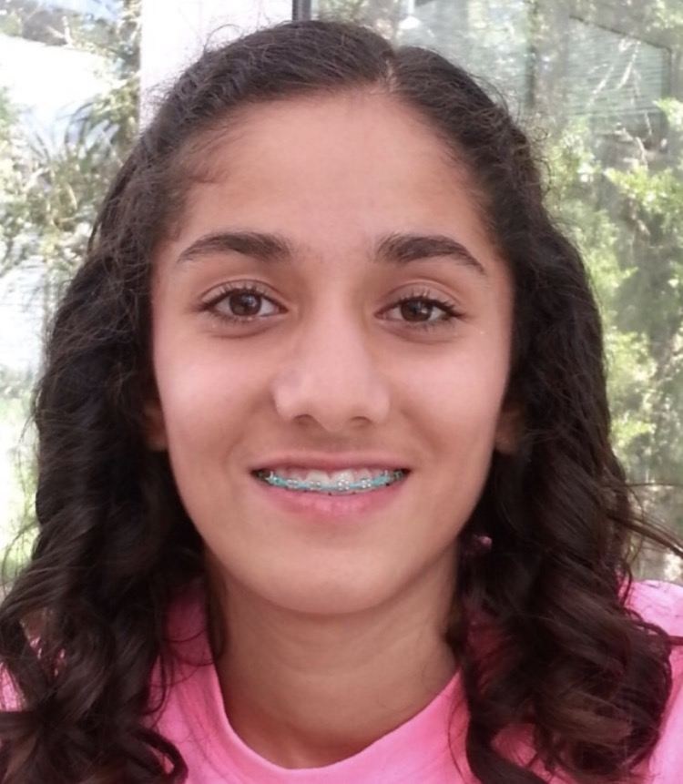
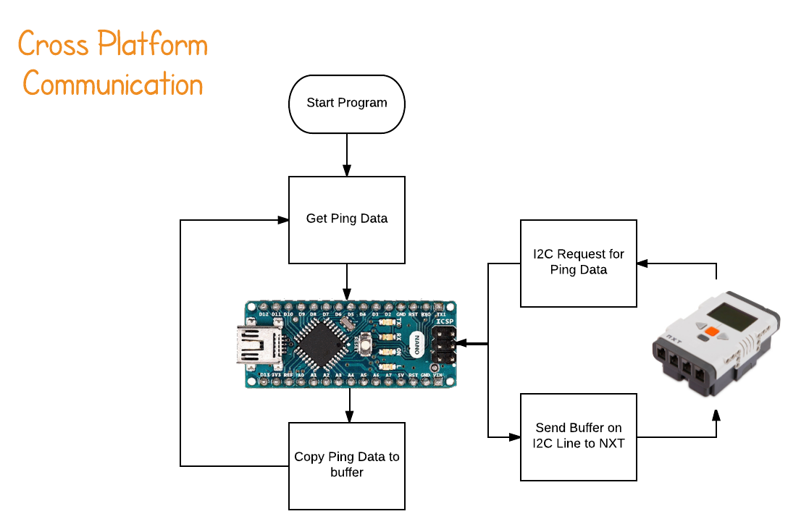
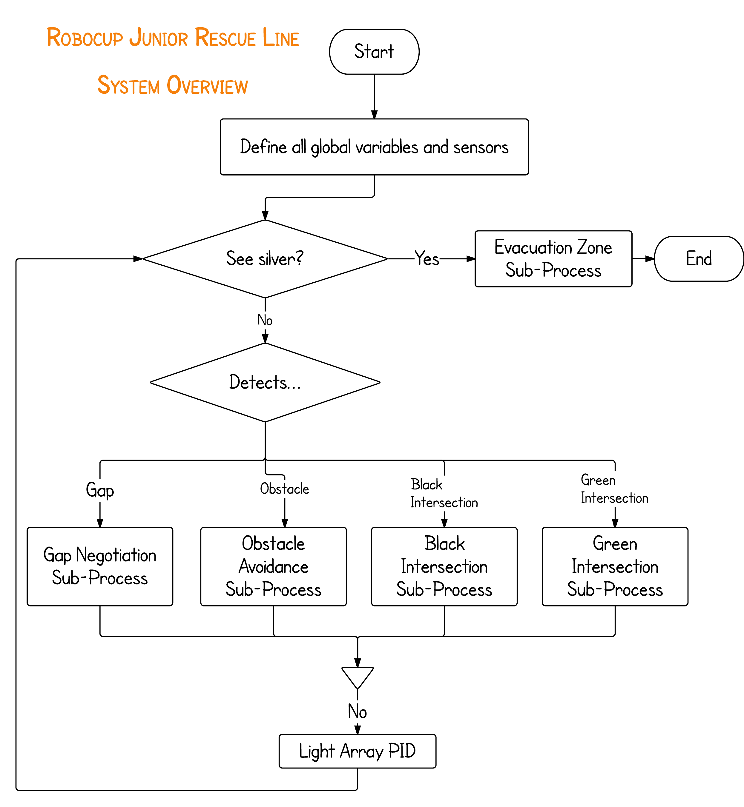
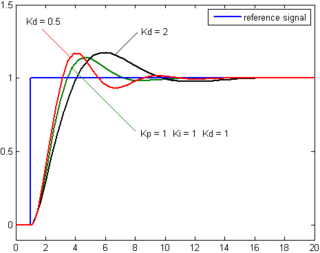
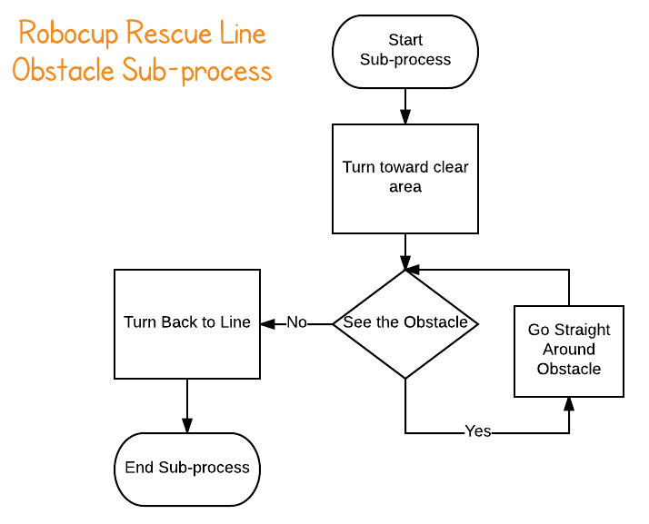
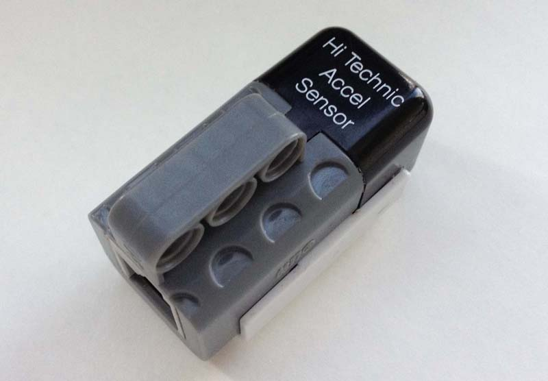
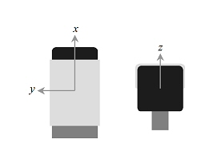
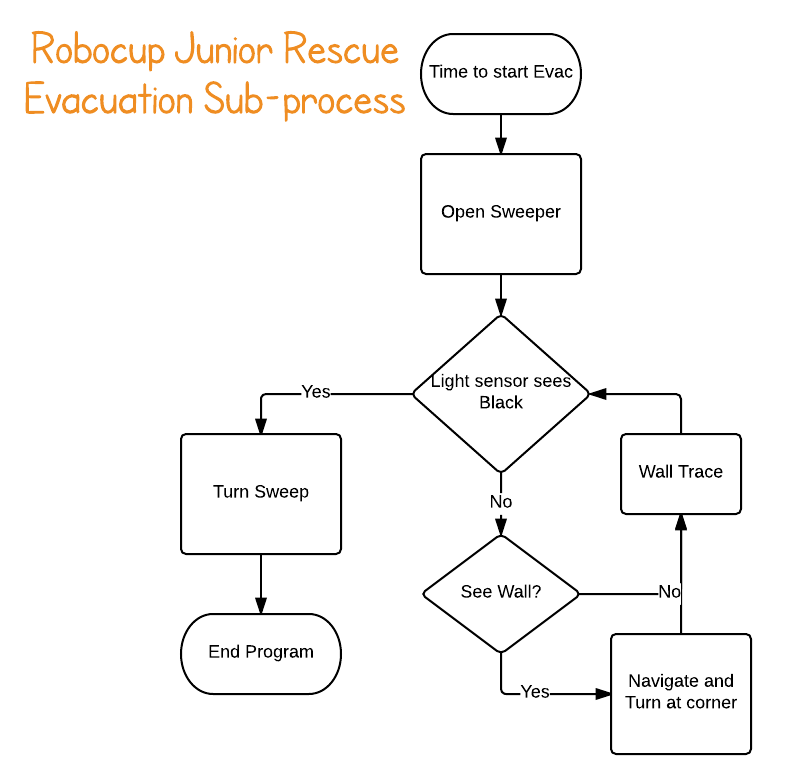

We are the Robocup Junior Rescue Line Open Team from the United States

Our Team
Ethan Mak

Ethan Mak is a rising junior in Millburn High School in NJ. He loves coding and tinkering with electronics, especially disassembling other devices. When he isn't with electronics, he likes debating and talking about current events, swimming, running, and playing the violin. Ethan helped all around by coding and building the robot as well as making the poster and website
Sonia Purohit
Sonia is going into her junior year at the Academy of Sciences in Bridgewater, NJ. She loves software programming and teaching robotics. While debugging can sometimes be frustrating, she enjoys the structured problem solving aspect of robotics. She also enjoys playing the piano and is a varsity track runner and soccer player.
Jagdeep Bhatia
Jagdeep is a rising Sophomore at Watchung Hills Regional High School who has a deep love for math and computer science. In his free time, Jagdeep enjoys running cross country, making video games in Javascript, and playing the tabla, an Indian musical instrument. For this project, Jagdeep was in charge of designing the robot. He used a combination of Lego pieces and 3d printed parts to construct the chassis of the robot.
Mehal Kashyap
Mehal is going to be a junior in high school in the fall of 2017. She loves anything and everything related to learning, whether it be math, chemistry, writing, or computer science. When she is not doing robotics or school work, Mehal enjoys dancing, reading, and spending time with her friends and family. Mehal helped with the project by wiring and coding for the evac mechanism.
Our Mentors
Elizabeth Mabrey
Dennis Mabrey
Dennis Mabrey has thirty years of system and application level software engineering experience. He was a software developer on the FBI's CODIS project and a Principal Architect for Microsoft Consulting Services. He has consulted for numerous Fortune 500 companies, large accounting firms, and the NASDAQ stock exchange. Dennis has a great passion for just about anything challenging in the computer industry. Dennis received B.S. in Computer Science from the University of Delaware.
Hybrid
Why we chose it

We found that the NXT Brick, while fairly versatile in the types of sensors that can be connected, is unrelenting in the amount of sensors that can be attached. We found that Arduino would be the better option for increasing the amount of sensors, but its interface with motors is extremely complicated. Instead, we opted for a hybrid of the two platforms in order to have multiple ultrasonic sensors on the Arduino with the same easy interface with the motors as the NXT has.
Mechanism

We connected the two platforms by utilizing the ability of the Arduino to be an I2C slave. We utilized the NXT's I2C bus in order to communicate between the microcontrollers and send the data. For ultrasonic sensors, we used Parallax PING Sensors and mounted them to 3D printed brackets to make them compatible with LEGO pieces. We used an Arduino Nano for our second microcontroller and soldered it with headers to a proto-board and attached it to the NXT.
Evacuation Mechanism

To gather the balls, there is a long extendable arm attached to the side of the robot. It has rubber bands attached to it giving it tension to expand. On the end of the arm, a fishing line controlled by a spool on a motor allows the arm to expand or contract. This allows the balls to be collected and swweeped into the lower coner.
Drivetrain

We used a simple 2 motor drive train with treads as our basis for movement. We opted for the treads because it sacrificed speed but allowed the robot to easily traverse speed bumps and ramps. The treads have rubber bands on them in order to create more friction between the slippery plasic LEGO treads and the ground for better manuverability.
Linetracing Sensors

We used 4 sensors for line tracing: a Mindsensors Light Sensor Array, 2 NXT Color Sensors, and an EV3 Light Sensor. They were placed about 3 mm from the ground to ensure the highest accuracy for the values.
I2C Hybrid
In our Arduino code, we constantly gather data from the ultrasonic sensors in a loop and write them into a small 4 byte buffer. When an NXT requests the data over the I2C line, it interrupts the program to send the buffer over the I2C bus.
Overall Structure
We divided our code into the following modules
- Linetracing
- Obstacle Avoidance
- Evacuation Room
Linetracing
In order to better maintain our linetracing code, we effectively split into into two parts, normal linetracing and exceptions. These exceptions include gaps and intersections with or without green. For these, we defined specific subprocesses to deal with them. For all other tiles, we handed control to normal linetracing where we used light array PID for navigation.
Light Array PID

Intersections

In order to detect black intersections, we ensure that at least half of the array is on black while the light sensor sees black. When the robot detects black intersections without green, it just goes straight, ignoring it.

When we detect green on any side, we first check the other sensor for green. If it does, there is a dead end, signaling for the robot it turn 180. If there is not, the robot goes straight to check if there is a black line directly in front of it. If there is not, it goes straight. If there is, it turns 90 degrees in the direction of the green.
Obstacle Avoidance
We utilized a rudimentary but efficient way of tracing the obstacle. When it detected the obstacle, the robot would turn and go straight until it no longer saw the obstacle using its side ultrasonic sensors. Then it would navigate back to the line creating a box-like formation.
Ramp Negotiation
 Our robot had problems with weight distribution making it difficult to go up and down the ramp. In order to solve this, we attached a Hitechnic Accelerometer to allow the robot to detect its inclination. By utilizing the acceleration of gravity as a reference point, arctangent could determine the robot's angle based off the ratio of 2 acceleration vectors. This ultimately gave the robot the ability to alter its motor power based off its inclination, allowing us to better navigate the ramp.
Evacuation Room
In the evacuation room, the robot first checks the room dimensions, then extends the arm. It traces the wall until it hits a corner, then retracts its claw slightly in order to limit its ability to hit obstacles in the room, then it turns. Whenever it detects an obstacle in the room with its left ultrasonic sensor, the robot will retract its arm to the distance of the obstacle, then go around the obstacle before extending it again. When the robot detects the black triangle with its light sensor, it turns incrementally while retracting the claw, pulling the balls into the corner.

Storming Robots is an institution started by Elizabeth and Dennis Mabrey geared toward creating a generation that is competitive toward computer science and electrical engineering. If you would like to learn more about Storming Robots, please visit www.stormingrobots.com
If you have any business inquiries or questions, just send us an email.
Ethan Mak - Webmaster
Email: ethan.mak100@gmail.com
Storming Robots
Email: office@stormingrobots.com